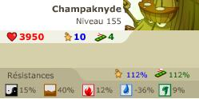

Menu barbok'you

Donjon Fungus
Donjon faisable par équipe de 7 à 8 joueurs de level 140 à 200
Durée : environ 80 à 120 minutes
Ne se capture pas
L'entrée de la grotte se situe en -18/28 |
|---|
Il vous faudra arriver en -14/33 pour entrer reellement dans ce donjon, attention tout les groupes dans la caverne pour arriver jusqu'ici agressent (et sont deja costaud) |
|---|
Prevoyez au moins 2 énis avec 1500-2000 point de vie, c'est un trés gros donjon. les champmane soignent leurs alliées et balancent quelques sorts. Les champodontes sont trés mechants, ils tapent à 300 environ au cac et virent jusqu'a 5 PA |
|---|
  |
|---|
Un panda est également vivement conseillé pour ce donjon. Les champ à gnons invoque une gentille creature qui fait 200 dommages en plus par tour en zone (en gros 1er tour 200 degat, 2éme : 400 degats, etc), en 5 tours on atteind les 1000 degats ca picotte. Les champaknyde balancent des sorts de vole vie, de -1000 soins, ... |
 |
|---|
Un sacri est également une bonne option ainsi qu'un feca. les tromperelle lance des sorts de -5 dommages, qui s'accumulent trés vite et font qu'on ne fait plus de degats. |
On se separe, il faut etre au minimum 2 de chaque coté, ensuite on a des salles avec 4 places maximum |
|---|
Une personne sur chaque dalle pour ouvrir les portes |
|---|
Heureusement des groupes plus petits quand meme |
|---|
Désolé pour la vulgarité de -Etane-, je lui avais dit que je screenais pourtant... |
|---|
Derniére salle avant le boss, groupe 1200 par là, un bon entrainement |
|---|
Un tueur ! C'est un des plus gros vilain du jeu, il tape à 800/1200 en zone, se donne des PA et 2 PM, il lance un sort ou il gagne 100% dommages à chaque coup qu'il recoit, il a aussi dans sa botte un sort comme reconstitution qui lui rend plus de 7000 PV, il lance egalement sur une seule personne un sort de vole de vie, il gagne aussi apparement de la vie quand on lui retire des PA. A cela s'ajoute les invocations qu'il balance : les monstres rencontrés jusque ici. Tout d'abord attention au sort du champaknyde qui fait -1000 soins, ca empeche de soigner si on se debuff pas, le sort mot de jouvence level 6 est fortement conseillé. Ensuite pour le battre : treve du feca, sacrifice du sacri et boost agi. Ensuite si le panda le porte et que le sacri est à coté du panda, le ougah va tenter le tacle et raté si + de 1000 agilité, gerer le reste de la team durant ce temps là. Une fois qu'il reste le ougah soit methode bourrin soit le bloqué dans un coin avec 2 de ses invocations, faire bouclier feca sur une invocation et taper le ougah + invoque au marteau En gros donjon pour les THL, trés technique et ou il faut un peu de chance aussi ;) |
|---|
Dofus est un MMORPG édité par Ankama." Barbok " est un site non-officiel sans aucun lien avec Ankama.
Toutes les illustrations sont la propriété d'Ankama Studio et de Dofus. Le contenu de ce site a été rédigé initialement par Immortal, il ne s'agit que d'une remise en ligne effectuée par Eternal Games.